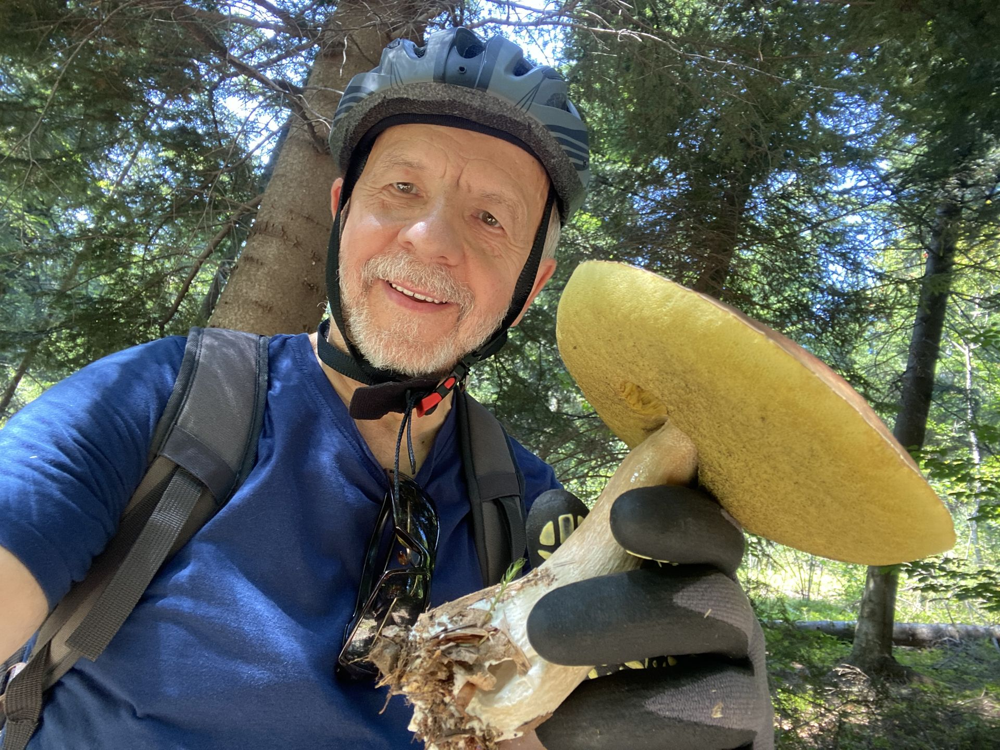
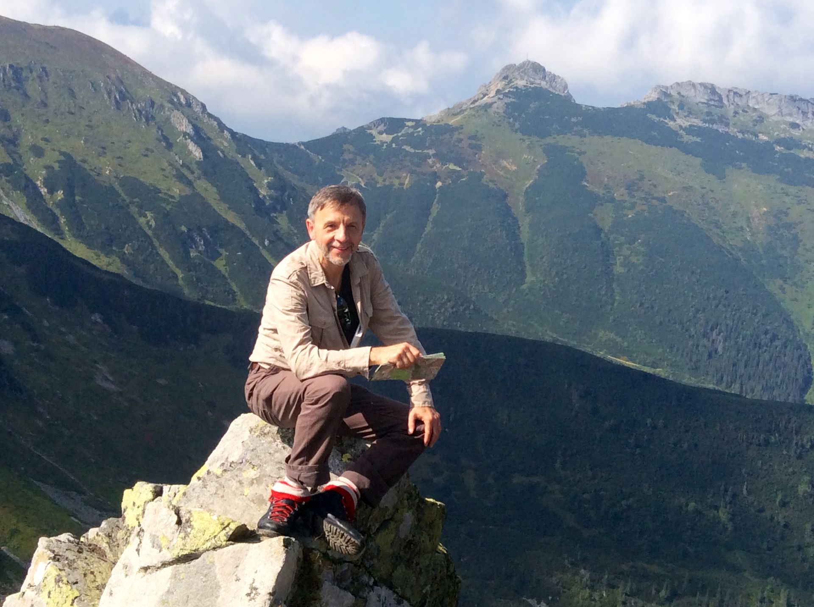
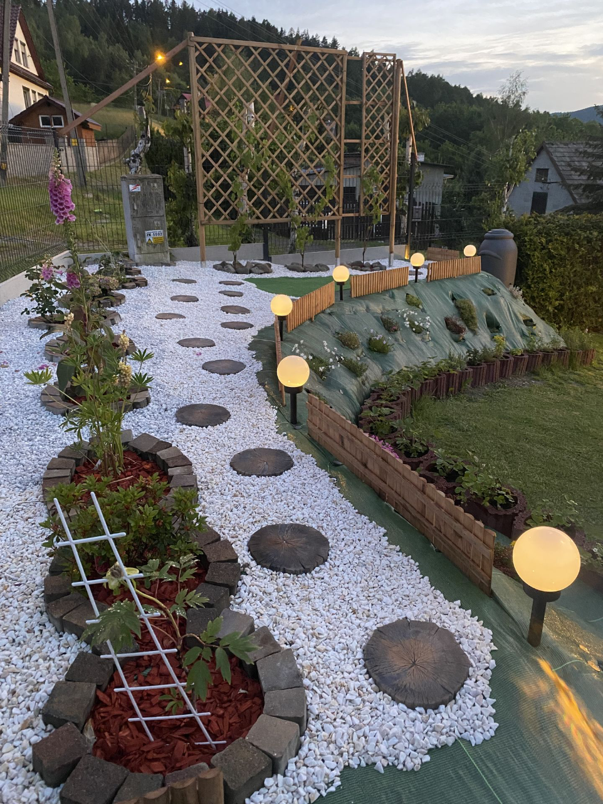
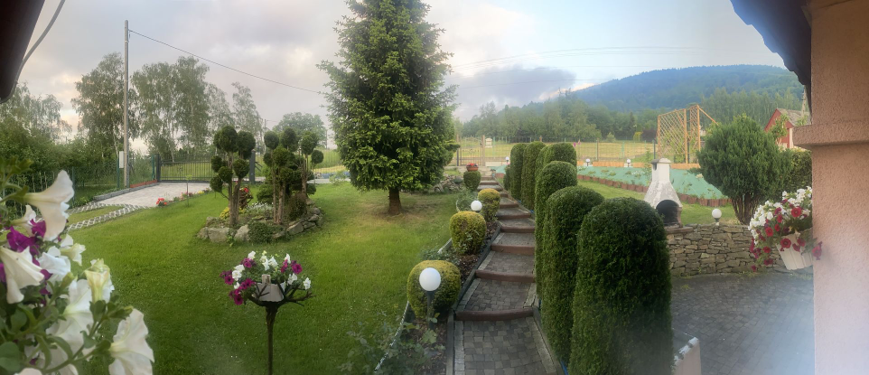
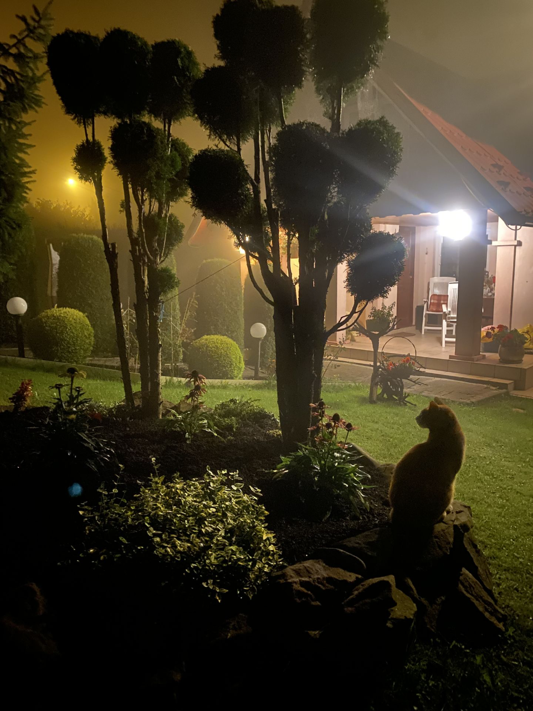

Pasja
Turystyka i sport




O mnie
Po burzliwej młodości i zamknięciu marzeń o posłudze kapłańskiej, wstąpiłem w związek małżeński. W tym czasie ukończyłem Akademię Muzyczną w Katowicach, a później — już w dojrzałym wieku — Śląską Wyższą Szkołę Zarządzania w Oświacie. Moje życie osobiste, to głównie liczna rodzina; Pierwsza żona Maria i czwórka dzieci; Grażyna, Dawid, Mateusz i Marek, był też martwo urodzony syn Mariusz. Wokół rodziny toczyło się całe moje zabiegane życie. Dzieci uczestniczyły w zasadzie we wszystkich przedsięwzięciach. Prowadziłem zespoły muzyczne, działalność charytatywną, organizowałem koncerty, festiwale. Uczyłem w szkole, kierowałem instytucjami kultury, grałem w kościele na organach i dawałem prywatne lekcje gry na fortepianie i gitarze. Te, pozornie różne sfery łączyła jedna — w zasadzie towarzysząca mi od dzieciństwa — pasja poszukiwania Prawdy Życia. Pomiędzy zmaganiami codzienności i ciągłym pośpiechem tliła się we mnie nutka duchowych poszukiwań. Pracując w kilku miejscach jednocześnie (a wcześniej było jeszcze dziesięć lat pracy w Kopalni Zabrze i służba w Marynarce Wojennej) myślałem sobie, żartując: Gdybym tak dodał wszystkie lata, jako oddzielne miejsca pracy, wraz ze studiami, kursami i stopniami zawodowymi nauczyciela — przekroczyłbym znacznie 100 lat życia. Chyba to właśnie docenił Prezydent Rzeczypospolitej Polskiej honorując w 2013 r. całokształt mojej działalności Złotym Medalem za Długoletnią Służbę, a wcześniej Brązowym Krzyżem Zasługi.
W końcu zrezygnowałem z kariery zawodowej, by całkowicie oddać się swoim pasjom. Moja pierwsza książka Cisza. Esencja naszego umysłu została uznana za najlepszą książkę psychologiczną roku 2012. Pozycję tę przetłumaczyła na język hiszpański moja siostra Irena i wspólnie wydaliśmy ją w Argentynie. W roku 2013 wydałem książkę z audiobookiem zatytułowaną Jam Jest. Ta z kolei publikacja przełożona została na język angielski przez polską poetkę Marylę Rose mieszkającą na stałe w Australii. W roku 2016 książka doczekała się drugiego wydania, a rok później Cisza… trzeciego wydania w formie drukowanej i elektronicznej. W roku 2018 wydałem trzecią książkę Spojrzenie Boga. Bliźniacze Dusze. Tematyka tych trzech książek — choć różna stylistycznie — spójna jest pod kątem rozwoju osobistego, dlatego objąłem ją ogólną nazwą: Tryptyk Pokory, Spełnienia i Szczęścia. Ukoronowaniem mojej pracy pisarskiej jest wydana w 2023 roku książka Ścieżki spełnionego życia. Współczesność a starożytna mądrość duchowa.
Od czasu wydania pierwszej książki, moje życie uległo całkowitej przemianie. W tej części życia również owocnie uczestniczyły moje dzieci. Najwięcej satysfakcji przynosiły mi te przedsięwzięcia, w których uczestniczyły wszystkie; Grażyna jako wokalistka i kompozytorka (trzy fakultety); Dawid artysta fotograf i filmowiec; Mateusz pisarz, reżyser dźwięku, filmowiec, gitarzysta oraz założyciel i dyrektor Prywatnej Szkoły Muzyki Rozrywkowej w Żywcu; Marek pianista i kompozytor, oraz założyciel Zabrzańskiego Bractwa Rycerskiego; no i moje śpiewające wnuki: Marysia, Magdalena, Oliwia, Szymon i zaczynający dopiero śpiewać Jakub. Z takim bogatym zapleczem rozpocząłem działalność medialną: wywiady, spotkania autorskie, wykłady, artykuły do prasy oraz nagrania zamieszczane w YouTube (do 2019 r. obejrzało mnie ponad 400 000 osób). Prowadzone przeze mnie sesje indywidualne i warsztaty, stały się dla mnie bezcenną skarbnicą wiedzy o sobie i życiu. Największy udział w tych przedsięwzięciach miała Grażyna, która występowała wraz ze mną, oraz komponowała muzykę do audiobooka książki Jam Jest; Dawid, który filmował nasze występy, projektował okładki i uczył mnie obsługi różnych programów graficznych; Mateusz, który nagrywał materiały w swoim studio, a wcześniej Marek organizując pokazy walk rycerskich. Obecnie dzieci współpracują ze sobą organizując już własne, samodzielne projekty.
Oddzielny, bardzo istotny rozdział życia, to moje małżeństwo. Żona Maria, to moja miłość i mój największy nauczyciel. Cała moja uwaga koncentrowała się na związku, którego też nie potrafiłem zrozumieć. Właśnie ta trudna dla mnie relacja była motorem poszukiwań. Rozterki wynikające z braku porozumienia rzucały mnie w wir pracy. Zacząłem pisać książki, układać wiersze, malować obrazy. Organizowałem koncerty, spektakle słowno-muzyczne. Nagrywałem płyty CD. Wraz z młodzieżą zdobywałem laury na szczeblu krajowym i międzynarodowym. Chodziłem namiętnie po górach z moim ukochanym kuzynem Andrzejem (co zaowocowało legitymacją przodownika górskiego). Przede wszystkim zaś ciągle się uczyłem. Zgłębiałem Pismo Święte, Klucz do Biblii, historię filozofii, buddyzm, religioznawstwo, psychologię i moją miłość — astronomię. Tłem wszystkich moich zmagań było małżeństwo i zapytanie: Jak to możliwe, że dwoje ludzi z gruntu pozytywnych, pragnących szeroko pojętego dobra, zupełnie inaczej postrzega życie i siebie nawzajem? Nie sposób odnaleźć odpowiedzi na tak trudne dylematy bez głębokiego poznania samego siebie. Ostatecznie wspólnie z żoną postanowiliśmy się rozstać.
W wieku 62 lat rozpocząłem nowe, samodzielne życie. Były to kolejne dynamiczne i burzliwe doświadczenia. Kupiłem mieszkanie. Założyłem Centrum Rozwoju Osobistego Cisza. Zrezygnowałem z funkcji dyrektora Miejskiego Ośrodka Kultury oraz zwolniłem się z funkcji organisty w kościele. Podjąłem pracę nauczyciela gry na fortepianie w Prywatnej Szkole Muzycznej prowadzonej przez syna Mateusza. W roku 2020 przeprowadziłem się na stałe do domku w górach, gdzie mogłem całkowicie oddać się swoim pasjom — pisaniu, turystyce i pracom ogrodowym. W wieku 71 lat wszedłem po raz drugi w związek małżeński z moją Bliźniaczą Duszą Marią, z którą odnalazłem spełnienie.
Całokształt moich doświadczeń osobistych, zdrowotnych (czerniak i różne stany nerwicowe), doświadczenia zawodowe i społeczne (m.in. aktywna działalność w NSZZ Solidarność i jedna z pierwszych legitymacji członkowskich w Zabrzu) — wszystko to pozwoliło mi zbudować solidny fundament, na którym wspieram się do dzisiaj. Naturalność, spontaniczność i pogoda ducha zawsze były dla mnie probierzem właściwie przyjętej drogi życiowej. Nie chcę być własnym sędzią, dlatego z wielką pokorą i ostrożnością stwierdzam: Jestem szczęśliwy.
Pasja
Pasja
Pasja


Pasja


